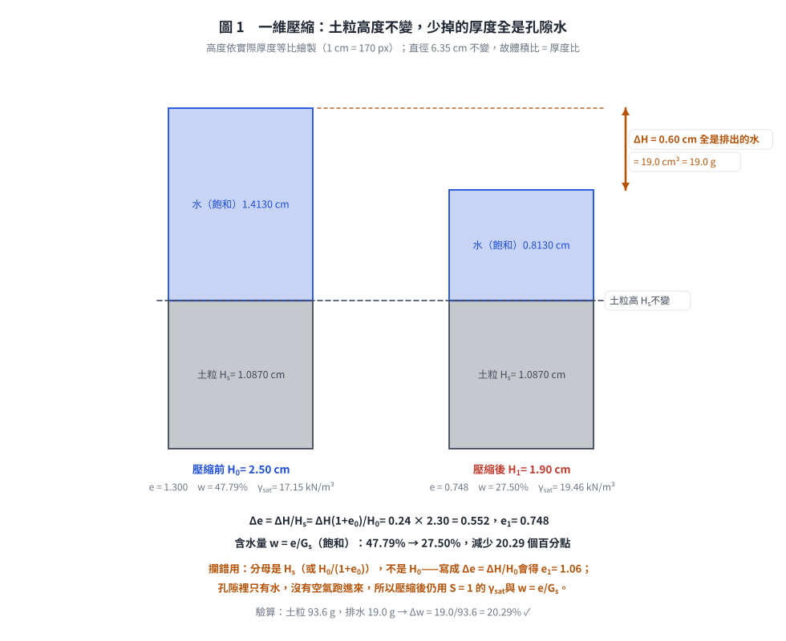

📄 題目正本：考卷原文・附圖・判讀清單（已確認）
SM-2007-1 題目正本
本檔只記錄考卷上寫了什麼、圖上畫了什麼，不含任何解法。解析見同資料夾
SM-2007-1.md。
判讀清單已確認（凍結）；本檔原則上不再修改（改動須回考卷原圖並記 log）。
| 項目 | 內容 |
|---|---|
| 考卷 | raw/exams/SM-2007_土壤力學與基礎設計.pdf 第 1 頁（全一頁），第一題 |
| 考年 | 民國 96 年（2007） |
| 配分 | 25 分（㈠7、㈡6、㈢6、㈣6） |
| 附圖 | 無 |
| 判讀狀態 | 已確認（2026-11-15 關卡一：使用者授權依建議判讀確認；㈣「含水量之變化」依建議判讀為求壓縮後含水量並列出變化量（#6）；轉錄 2026-11-15；PyMuPDF 110 dpi 全頁目視，題文與附表 200–250 dpi 局部放大，PDF 文字層核對逐字原文；盲讀後才比對既有解析） |
1. 考卷原文（逐字）
一、一飽和黏土試體置於壓密盒中，其直徑為 6.35 公分、厚度為 2.5 公分，經壓縮後直徑不變，厚度變為 1.9 公分，若其初始孔隙比（initial void ratio）為 1.30，且土壤顆粒比重為 2.72，假設壓縮造成體積變化與孔隙比下降之原因，主要來自於孔隙水之流失，試計算下列各問題：㈠初始單位重（kN/m³）（7 分）。㈡壓縮後孔隙比（6 分）。㈢壓縮後之單位重（kN/m³）（6 分）。㈣壓縮後含水量之變化（6 分）。
2. 考卷給的公式、附表與參數
- 飽和黏土試體：直徑 6.35 cm、厚 2.5 cm；壓縮後直徑不變、厚 1.9 cm。
- 初始孔隙比 $e_0$ = 1.30；土粒比重 $G_s$ = 2.72。
- 假設：體積變化與孔隙比下降主要來自孔隙水流失。
- 沒有給：$\gamma_w$、試體質量。
- 考卷沒有附公式。
- 卷首注意事項：㈠可以使用電子計算器。㈡不必抄題，作答時請將試題題號及答案依照順序寫在試卷上，於本試題上作答者，不予計分。另有「※若條件不足，請自行作合理假設！」
3. 附圖
考卷本題無附圖。
4. 判讀清單
| # | 項目 | 判讀 | 圖上／題文依據 | 把握 |
|---|---|---|---|---|
| 1 | 初始狀態 | 飽和（$S$ = 100%），$e_0$ = 1.30 | 題文「一飽和黏土試體」 | 確定 |
| 2 | 變形型態 | 直徑不變、只有厚度 2.5 → 1.9 cm（一維壓縮） | 題文 | 確定 |
| 3 | 體積變化來源 | 土粒體積不變，體積減少等於排出的孔隙水體積 → 壓縮後仍飽和 | 題文「主要來自於孔隙水之流失」 | 確定（解讀） |
| 4 | 所求㈠㈢ | 初始與壓縮後的（飽和）單位重，kN/m³ | 題文 | 確定 |
| 5 | 所求㈡ | 壓縮後孔隙比 | 題文 | 確定 |
| 6 | 所求㈣ | 「壓縮後含水量之變化」：求壓縮前後含水量及其變化量（減少多少） | 題文 | 確定（解讀） |
| 7 | 直徑 6.35 cm | 直徑不變，只用於確認一維；求孔隙比與單位重不需要 | 題文 | 確定 |
| 8 | 考卷沒有給 | $\gamma_w$ | 全題 | 確定 |
轉錄：2026-11-15（SM-U1-1 題目正本推廣・批 1）
確認：2026-11-15 使用者授權依建議判讀確認（SM-U1-1 題目正本推廣・批 1，關卡一；使用者指示「要我確認的請依你建議」）
考題編號：SM-2007-1
主分類： SM-U1-1 土壤基本性質
副分類： 無
分析法： 混合
標籤： 三相關係 孔隙比 飽和度 含水量 單位重 一維壓縮
1. 題目（考卷原文見題目正本）
考卷原文、公式／附表、附圖與判讀清單（已確認）見
SM-2007-1-problem.md。本節只列解題時最容易讀錯的地方與本解使用的記號；題意以題目正本為準。
常見誤讀
| 項目 | 正確判讀 | 常見誤讀 |
|---|---|---|
| 壓縮後狀態 | 體積減少全由排水造成，土粒不變、壓縮後仍飽和（題目正本 #3） | 以為壓縮後進氣、$S<100\%$ |
| 一維壓縮 | 直徑不變，$H/(1+e)$ 為定值（#2、#7） | 用直徑重算體積比或以為直徑也縮 |
| ㈣所求 | 壓縮前後含水量及變化量（#6） | 只寫壓縮後含水量不寫變化量 |
本解記號： $e_0$、$e_f$ 初始／壓縮後孔隙比；$H_0$、$H_f$ 初始／壓縮後厚度；$w_0$、$w_f$ 含水量；$\Delta w$ 含水量變化；$\gamma_0$、$\gamma_f$ 飽和單位重。
2. 考題核心精神與出題者意圖 (Core Concepts & Examiner's Intent)
核心精神：由土壤三相圖（土粒-水-空氣）關係出發，配合壓密過程中「固體體積不變」的特性，建立孔隙比、飽和度、含水量與單位重的關聯。
出題者意圖：測驗考生是否清楚飽和狀態下（$S=1$）之三相參數換算，以及在一維壓縮（直徑不變，厚度減小）且僅流失孔隙水（維持 $S=1$）的條件下，如何透過幾何變化來求得新的物理性質參數。
3. 解題戰略地圖與陷阱分析 (Strategic Roadmap & Trap Analysis)
-
初始狀態：
已知 $S_0=1$, $e_0=1.30$, $G_s=2.72$。利用飽和單位重公式求出 $\gamma_0$。 -
壓縮過程：
因置於壓密盒中直徑不變，所以體積變化率等於厚度變化率，即 $\frac{\Delta V}{V_0} = \frac{\Delta H}{H_0} = \frac{\Delta e}{1+e_0}$。
藉此關係式求出壓縮後的孔隙比 $e_f$。 -
壓縮後狀態：
因題目假設體積與孔隙比下降完全來自孔隙水流失，表示土壤未進氣，依舊保持飽和（$S_f=1$）。已知 $e_f$ 及 $G_s=2.72$，代入飽和單位重公式求出壓縮後的 $\gamma_f$。 -
含水量變化：
初始含水量 $w_0$ 可由 $S_0 e_0 = w_0 G_s$ 求得；壓縮後含水量 $w_f$ 由 $S_f e_f = w_f G_s$ 求得。最後求 $\Delta w = w_0 - w_f$。
陷阱分析：
- 壓密過程中孔隙水流失且無空氣進入，土體一直保持飽和狀態，即 $S_f = 1$。
- 體積變化與孔隙比變化的關係：$\Delta V / V_0 = \Delta e / (1+e_0)$，不能將 $\Delta H/H_0$ 直接等於 $\Delta e$。
- 水的單位重建議採用 $\gamma_w = 9.81 \text{ kN/m}^3$ 進行較精確的計算。
3.5 變數層次分析 (Variable Hierarchy Analysis)
最終目標
計算飽和黏土在壓密變形前後的初始單位重、壓縮後孔隙比、壓縮後單位重與含水量變化。
本題關鍵公式（依計算順序）
-
初始單位重：
$$ \gamma_0 = \frac{G_s + S_0 e_0}{1 + e_0} \gamma_w $$ -
一維體積變化與孔隙比之關係：
$$ \frac{\Delta H}{H_0} = \frac{\Delta e}{1 + e_0} \implies \Delta e = \frac{\Delta H}{H_0} (1 + e_0) $$ -
壓縮後孔隙比：
$$ e_f = e_0 - \boxed{\Delta e} $$ -
壓縮後單位重：
$$ \gamma_f = \frac{G_s + S_f \boxed{e_f}}{1 + \boxed{e_f}} \gamma_w $$ -
含水量與孔隙比之關係：
$$ w = \frac{S e}{G_s} $$ -
含水量變化：
$$ \Delta w = \boxed{w_0} - \boxed{w_f} $$
L1：題目直接給定
初始試體直徑 $D$ | 6.35 cm | 試體直徑不變
初始厚度 $H_0$ | 2.5 cm |
壓縮後厚度 $H_f$ | 1.9 cm |
初始孔隙比 $e_0$ | 1.30 |
顆粒比重 $G_s$ | 2.72 |
初始飽和度 $S_0$ | 1.0 | 飽和黏土試體
壓縮後飽和度 $S_f$ | 1.0 | 僅孔隙水流失，無空氣進入，故仍為飽和
L2：需知識點推導
初始單位重 $\gamma_0$ | $\frac{G_s + S_0 e_0}{1 + e_0} \gamma_w$ |
厚度變化量 $\Delta H$ | $H_0 - H_f$ |
孔隙比變化量 $\Delta e$ | $\frac{\Delta H}{H_0} (1 + e_0)$ |
壓縮後孔隙比 $e_f$ | $e_0 - \Delta e$ |
壓縮後單位重 $\gamma_f$ | $\frac{G_s + S_f e_f}{1 + e_f} \gamma_w$ |
初始含水量 $w_0$ | $\frac{S_0 e_0}{G_s}$ |
壓縮後含水量 $w_f$ | $\frac{S_f e_f}{G_s}$ |
含水量變化 $\Delta w$ | $w_0 - w_f$ |
L3：深層知識（不懂就卡住）
一維壓縮的孔隙比變化式 | 壓密盒限制側向變形，體積應變等於垂直應變 $\Delta V/V_0 = \Delta H/H_0 = \Delta e/(1+e_0)$ |
三相關係與飽和狀態推演 | $Se = wG_s$ 和飽和時 $S=1$ 的觀念要靈活運用，且在壓密過程中因孔隙體積減小是由於水被擠出，故 $S$ 始終保持 $1.0$。 |
4. 步驟化詳細計算過程 (Step-by-Step Detailed Calculation)
Step 1. (一)初始單位重 $\gamma_0$
黏土試體為飽和，飽和度 $S_0 = 1.0$。
水的單位重取 $\gamma_w = 9.81 \text{ kN/m}^3$。
利用飽和單位重公式：
$$ \gamma_0 = \gamma_{sat} = \frac{G_s + e_0}{1 + e_0} \gamma_w $$
代入數值：
$$ \gamma_0 = \frac{2.72 + 1.30}{1 + 1.30} \times 9.81 = \frac{4.02}{2.30} \times 9.81 = 1.7478 \times 9.81 \approx 17.146 \text{ kN/m}^3 $$
答案：初始單位重為 $\boxed{17.15 \text{ kN/m}^3}$
Step 2. (二)壓縮後孔隙比 $e_f$
試體置於壓密盒中，直徑不變，故面積 $A$ 不變。體積變化等於厚度變化。
$$ \frac{\Delta V}{V_0} = \frac{A \cdot \Delta H}{A \cdot H_0} = \frac{\Delta H}{H_0} $$
而體積變化的基本公式為：
$$ \frac{\Delta V}{V_0} = \frac{\Delta e}{1 + e_0} $$
已知初始厚度 $H_0 = 2.5 \text{ cm}$，壓縮後厚度 $H_f = 1.9 \text{ cm}$，則厚度變化量為：
$$ \Delta H = 2.5 - 1.9 = 0.6 \text{ cm} $$
代入關係式：
$$ \frac{0.6}{2.5} = \frac{\Delta e}{1 + 1.30} $$
$$ \Delta e = 0.24 \times 2.30 = 0.552 $$
所以，壓縮後之孔隙比 $e_f$ 為：
$$ e_f = e_0 - \Delta e = 1.30 - 0.552 = 0.748 $$
答案：壓縮後孔隙比為 $\boxed{0.748}$
Step 3. (三)壓縮後之單位重 $\gamma_f$
題目說明「體積變化與孔隙比下降之原因，主要來自於孔隙水之流失」，這表示壓縮後孔隙內仍充滿水，即土壤依舊處於飽和狀態，因此 $S_f = 1.0$。
計算壓縮後的單位重：
$$ \gamma_f = \frac{G_s + e_f}{1 + e_f} \gamma_w $$
代入數值：
$$ \gamma_f = \frac{2.72 + 0.748}{1 + 0.748} \times 9.81 = \frac{3.468}{1.748} \times 9.81 \approx 1.9840 \times 9.81 \approx 19.463 \text{ kN/m}^3 $$
答案：壓縮後之單位重為 $\boxed{19.46 \text{ kN/m}^3}$
Step 4. (四)壓縮後含水量之變化 $\Delta w$
利用基本三相關係式：$S \cdot e = w \cdot G_s$
在飽和狀態下 $S=1$，可得含水量 $w = \frac{e}{G_s}$。
初始含水量 $w_0$：
$$ w_0 = \frac{1.30}{2.72} \approx 0.47794 = 47.79\% $$
壓縮後含水量 $w_f$：
$$ w_f = \frac{0.748}{2.72} \approx 0.27500 = 27.50\% $$
含水量之變化量：
$$ \Delta w = w_0 - w_f = 47.79\% - 27.50\% = 20.29\% $$
（或直接利用 $\Delta w = \frac{\Delta e}{G_s} = \frac{0.552}{2.72} = 0.20294 = 20.29\%$ 計算）
答案：含水量變化為 $\boxed{20.29\%}$ （減少）

圖 1 一維壓縮時土粒高度 $H_s = H_0/(1+e_0)$ 不變，少掉的 0.6 cm 全是孔隙水。它攔兩種錯誤：把 $\Delta e$ 的分母寫成 $H_0$（會得 $e_1 = 1.06$），以及以為壓縮後孔隙進了空氣而不再用 $S = 1$ 的 $\gamma_{sat}$ 與 $w = e/G_s$。
5. 關鍵爭議點與進階探討 (Critical Issues & Advanced Discussion)
- 水的單位重選用：一般無特別註明時可採用 $\gamma_w = 9.81 \text{ kN/m}^3$ 進行精確計算。若為了計算方便使用 $9.8 \text{ kN/m}^3$ 或 $10 \text{ kN/m}^3$，會對單位重的結果造成些微小數點後的差異，但對孔隙比與含水量變化則無影響。
- 孔隙水流失代表飽和度不變：這點是判斷壓縮後單位重的關鍵。因為只有多餘的水被擠出（對應體積的減少），而未進氣，故 $S_f=1$ 依然成立。此屬常見的 Terzaghi 一維壓密理論的基本假設之一。
修正日期：2026-11-15（§1 改為指向題目正本 SM-2007-1-problem.md；§4 補解題圖解 figs/SM-2007-1-fig-1-compression-phase.svg；非勘誤）